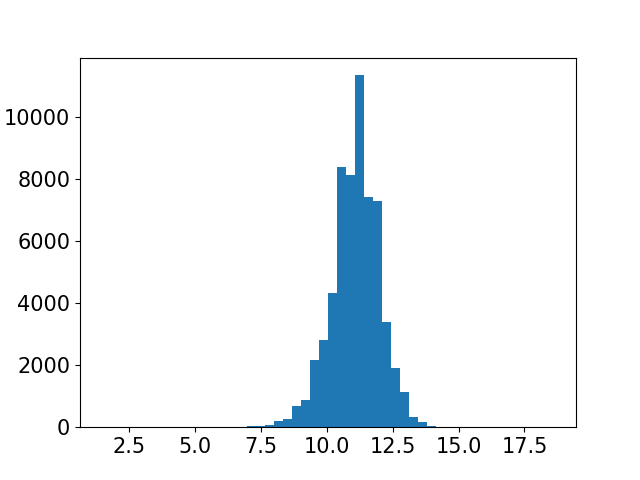
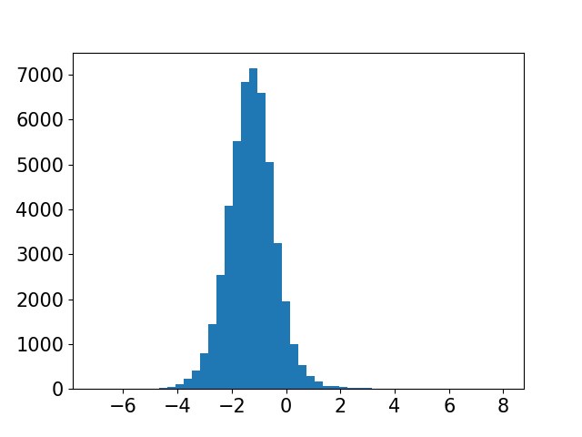
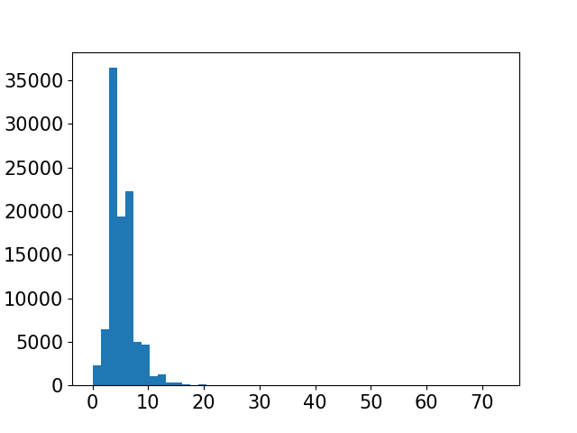
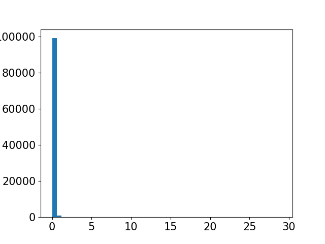
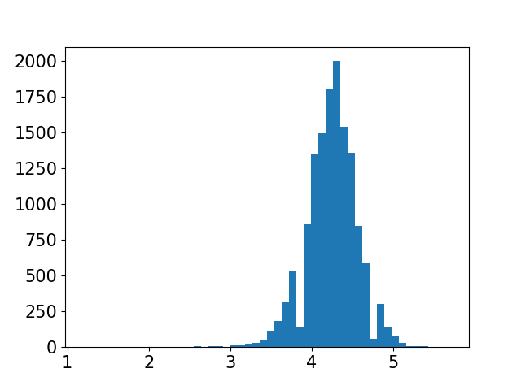
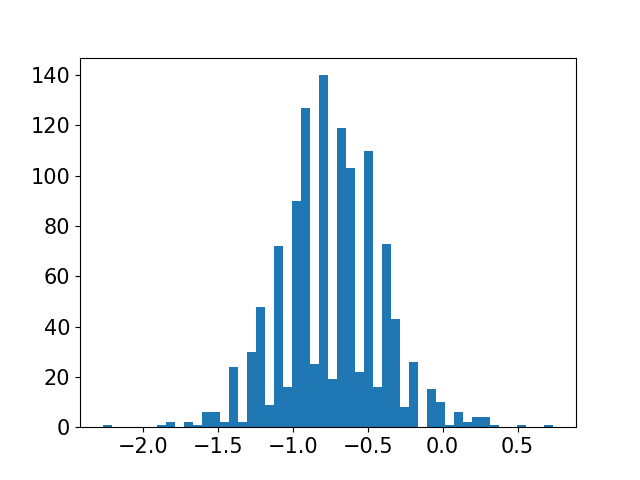
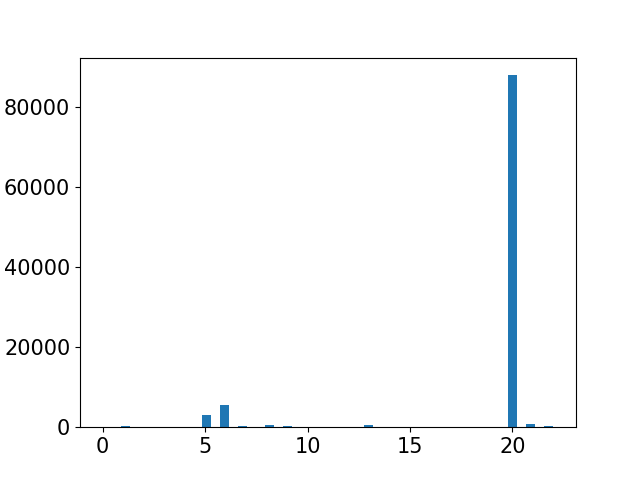
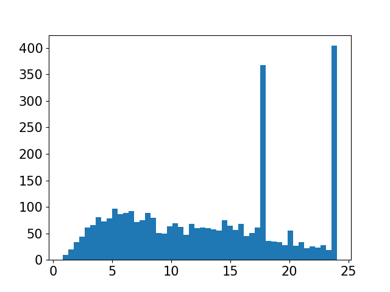

| Unnamed: 0 | Continuous variable
(int64) |
 |
Min: 1
Max: 1071192 Mean ± SD: 536327.99 ± 308947.04 Median (IQR): 537821.0 (268568.5, 803877.0) |
No Missing Values | 0 |
|---|---|---|---|---|---|
| interaction | Binary Variable
(integer based) |
 |
Binary variable
0: 91.3% 1: 8.7% |
No Missing Values | Binary variable
No outliers |
| d1n | Continuous variable
(int64) |
 |
Min: 1
Max: 1429 Mean ± SD: 470.48 ± 334.81 Median (IQR): 413.0 (187.0, 704.0) |
No Missing Values | 0 |
| d2n | Continuous variable
(int64) |
 |
Min: 2
Max: 1432 Mean ± SD: 941.44 ± 341.69 Median (IQR): 995.0 (694.0, 1232.0) |
No Missing Values | 0 |
| eig_1 | Continuous variable
(float64) |
 |
Min: 0.0
Max: 1.0 Mean ± SD: 0.23 ± 0.19 Median (IQR): 0.18 (0.07, 0.34) |
No Missing Values | 4899 |
| degree_1 | Continuous variable
(int64) |
 |
Min: 2
Max: 872 Mean ± SD: 181.34 ± 148.26 Median (IQR): 146.0 (70.0, 258.0) |
No Missing Values | 8551 |
| alf_1 | Continuous variable
(float64) |
 |
Min: -221.59
Max: 197.43 Mean ± SD: 0.01 ± 42.18 Median (IQR): 1.22 (-22.37, 20.83) |
No Missing Values | 15313 |
| ct_1 | Continuous variable
(float64) |
 |
Min: 0.0
Max: 0.25 Mean ± SD: 0.01 ± 0.03 Median (IQR): 0.0 (0.0, 0.01) |
No Missing Values | 40472 |
| bt_1 | Continuous variable
(float64) |
 |
Min: 0.0
Max: 10.66 Mean ± SD: 5.78 ± 2.27 Median (IQR): 6.28 (4.58, 7.34) |
No Missing Values | 8676 |
| cls_1 | Continuous variable
(float64) |
 |
Min: 0.0
Max: 0.0 Mean ± SD: 0.0 ± 0.0 Median (IQR): 0.0 (0.0, 0.0) |
No Missing Values | 6451 |
| pwr_1 | Continuous variable
(float64) |
 |
Min: -5.22
Max: 4.6 Mean ± SD: -0.02 ± 0.99 Median (IQR): 0.01 (-0.55, 0.46) |
No Missing Values | 15313 |
| trngl_1 | Continuous variable
(float64) |
 | Min: 0.0
Max: 0.23 Mean ± SD: 0.08 ± 0.04 Median (IQR): 0.07 (0.05, 0.1) |
No Missing Values | 9933 |
| wc_1 | Continuous variable
(int64) |
 | Min: 1
Max: 96 Mean ± SD: 8.33 ± 6.65 Median (IQR): 5.0 (5.0, 9.0) |
No Missing Values | 24866 |
| eig_2 | Continuous variable
(float64) |
 | Min: 0.0
Max: 1.0 Mean ± SD: 0.12 ± 0.16 Median (IQR): 0.04 (0.01, 0.17) |
No Missing Values | 16120 |
| degree_2 | Continuous variable
(int64) |
 |
Min: 2
Max: 872 Mean ± SD: 91.47 ± 116.43 Median (IQR): 44.0 (12.0, 130.0) |
No Missing Values | 16490 |
| alf_2 | Continuous variable
(float64) |
 |
Min: -221.59
Max: 197.43 Mean ± SD: 0.91 ± 42.91 Median (IQR): 2.99 (-22.3, 23.41) |
No Missing Values | 12823 |
| ct_2 | Continuous variable
(float64) |
 |
Min: 0.0
Max: 0.25 Mean ± SD: 0.04 ± 0.07 Median (IQR): 0.01 (0.0, 0.04) |
No Missing Values | 40022 |
| bt_2 | Continuous variable
(float64) |
 | Min: 0.0
Max: 10.66 Mean ± SD: 3.72 ± 2.7 Median (IQR): 3.83 (0.95, 5.97) |
No Missing Values | 0 |
| cls_2 | Continuous variable
(float64) |
 | Min: 0.0
Max: 0.0 Mean ± SD: 0.0 ± 0.0 Median (IQR): 0.0 (0.0, 0.0) |
No Missing Values | 870 |
| pwr_2 | Continuous variable
(float64) |
 | Min: -5.22
Max: 4.6 Mean ± SD: -0.0 ± 1.01 Median (IQR): 0.05 (-0.55, 0.53) |
No Missing Values | 12823 |
| trngl_2 | Continuous variable
(float64) |
 | Min: 0.0
Max: 0.23 Mean ± SD: 0.07 ± 0.06 Median (IQR): 0.07 (0.02, 0.11) |
No Missing Values | 0 |
| wc_2 | Continuous variable
(int64) |
 | Min: 1
Max: 98 Mean ± SD: 12.13 ± 17.53 Median (IQR): 6.0 (5.0, 9.0) |
No Missing Values | 42024 |
| dst | Categorical Variable
(integer based) |
 |
Categorical Variable
6 unique values |
No Missing Values | Categorical Variable
No outliers |
| simJ | Continuous variable
(float64) |
 |
Min: 0.0
Max: 1.0 Mean ± SD: 0.04 ± 0.09 Median (IQR): 0.01 (0.0, 0.04) |
No Missing Values | 31804 |
| simAA | Continuous variable
(float64) |
 |
Min: 0.0
Max: 272.24 Mean ± SD: 5.19 ± 11.82 Median (IQR): 0.66 (0.0, 4.51) |
No Missing Values | 37625 |
| eig_prod | Continuous variable
(float64) |
 |
Min: 0.0
Max: 0.85 Mean ± SD: 0.03 ± 0.06 Median (IQR): 0.01 (0.0, 0.03) |
No Missing Values | 30379 |
| ct_prod | Continuous variable
(float64) |
 |
Min: 0.0
Max: 0.06 Mean ± SD: 0.0 ± 0.0 Median (IQR): 0.0 (0.0, 0.0) |
No Missing Values | 39712 |
| alf_div | Continuous variable
(float64) |
 |
Min: -1115.06
Max: 1317.42 Mean ± SD: -0.01 ± 17.68 Median (IQR): -0.0 (-0.93, 0.92) |
No Missing Values | 49852 |
| bt_div | Continuous variable
(float64) |
 |
Min: 0.0
Max: 109.2 Mean ± SD: 22.74 ± 19.71 Median (IQR): 19.9 (3.91, 37.27) |
No Missing Values | 234 |